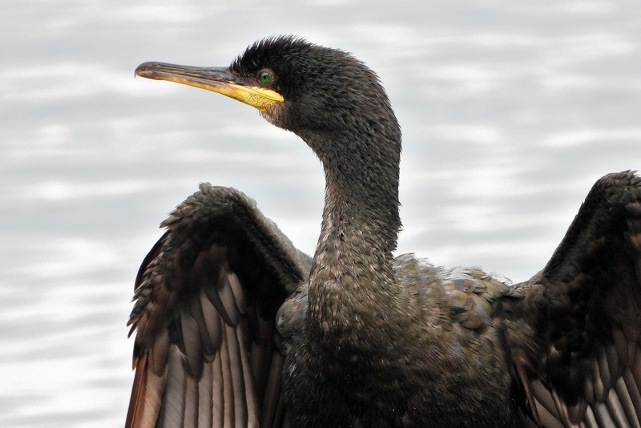
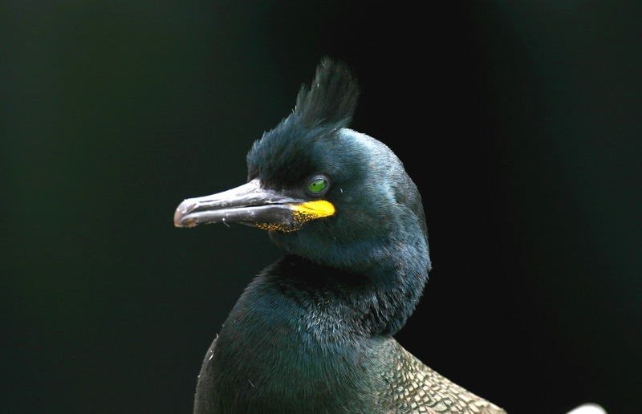

Описание
 В красоте хохлатому баклану нет равных. Несмотря на неплохую адаптацию, вид находится не в самом лучшем положении. Он внесен в Красную книгу, а значит, восстановление популяции требует дополнительных мер. Морская птица баклан имеет ряд схожих с сородичами характеристик и в основном они выражаются во внешнем виде.
В красоте хохлатому баклану нет равных. Несмотря на неплохую адаптацию, вид находится не в самом лучшем положении. Он внесен в Красную книгу, а значит, восстановление популяции требует дополнительных мер. Морская птица баклан имеет ряд схожих с сородичами характеристик и в основном они выражаются во внешнем виде.
Внешний вид

Внешнему виду хохлатого баклана всегда уделяют большое внимание – птица красивая и статная. Она сразу привлекает к себе взгляд. Размер тела взрослой особи средний. Длина от 68 до 78 см, а размах крыльев не меньше 110 см. Окрас преимущественно черный, хотя бывают редкие исключения.
Другие характеристики тела:
- длина крыла до 29 см
- длина клюва около 6 см
- вес взрослой особи от 1,5 до 1,8 кг
В отличие от большого баклана размеры тела меньше. Клюв тонкий и в меру длинный. Окрас оперения темный с зеленым отливом. На щечках отсутствуют светлые пятнышки. У молодняка иногда встречается окрас на щеках, но и он с возрастом исчезает. Низ тела всегда темный. Оперение на брюшке густое.
У взрослой особи есть хохолок. Он становится больше с возрастом. Возле клюва оперения нет, там проглядывается темная голая кожа. Основание ключа яркое с желтым оттенком. Хвост густой и большой и имеет круглую форму. Перья на хвосте плотно прилегает к телу.
Питание и охота

Основа рациона – рыба. Чтобы ее достать, хохлатый баклан ныряет на большую глубину, до 45 м. Птица привыкла ловить добычу ближе ко дну. В открытом море птицу найти сложно, для нее глубина слишком большая.
Что входит в рацион хохлатого баклана:
Водоем, на котором проживает стая, определяет пищевые привычки. В рационе могут присутствовать моллюски. Растительностью взрослые особи не питаются, потому что редко бывают на берегу.
Статус животного
- Баклановые
- Царство: Животные
- Тип/отдел: Хордовые
- Класс: Птицы
- Отряд/порядок: Веслоногие
- Семейство: Баклановые
- Категория редкости: 3 - редкие
- Красный список МСОП: Нет